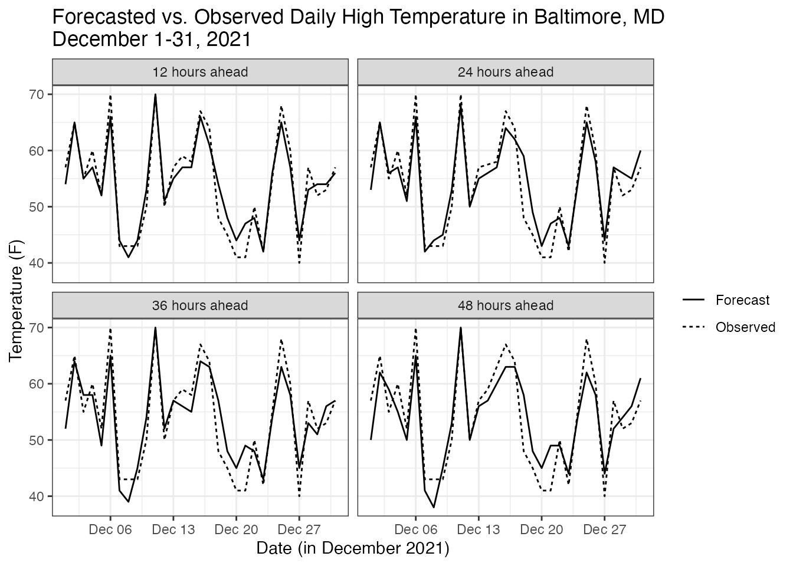
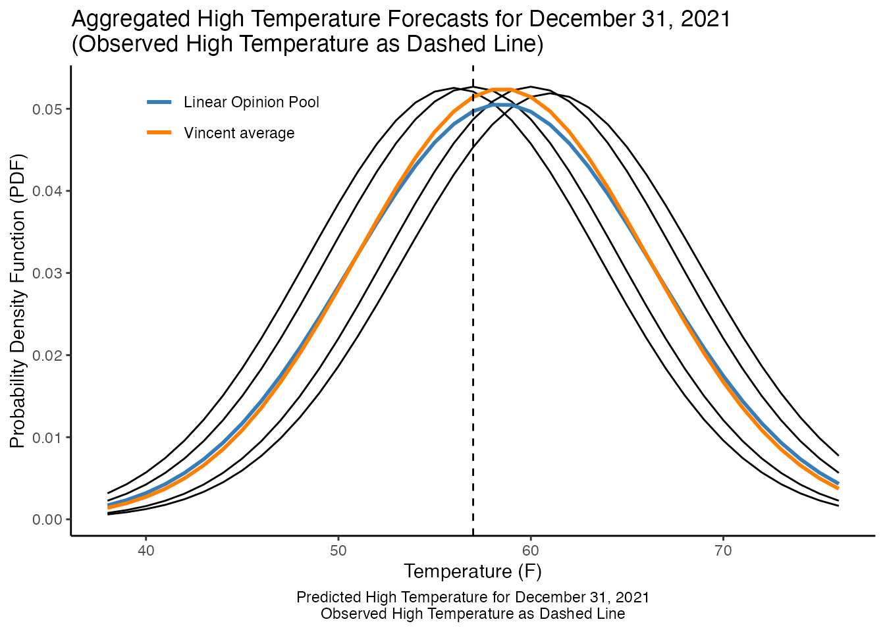

Example Analysis
tidy-tuesday-example-analysis.RmdThis vignette demonstrates the LOP() and
vincent() functions on the Weather Forecast
Accuracy dataset, which is a part of the TidyTuesday
project.
In this vignette, I seek to evaluate the National Weather Services’s 12-, 24-, 36-, and 48-hour ahead forecasts of the daily high temperature for Baltimore, Maryland between December 1, 2021 and December 31, 2021.
Daily High Temperature Forecasts for Baltimore, MD
The data and data dictionary are available here.
library(tidytuesdayR) # contains function to load data; alternative is to download from github URL (see below)
library(usethis)
library(tidyr)
library(dplyr)
library(purrr)
library(CombineDistributions)
library(ggplot2)
library(cowplot)
# test if a directory named "data" exists locally, if not create it
if (!dir.exists("../data")){
dir.create("../data")
}
# read the data; download locally if not already downloaded
if (!file.exists("../data/tuesdata.rda")){
tuesdata <- tidytuesdayR::tt_load('2022-12-20') # can also use tidytuesdayR::tt_load(2022, week = 51)
usethis::use_data(tuesdata, overwrite = TRUE)
# Alternatively, read in the data manually
# weather_forecasts <- readr::read_csv('https://raw.githubusercontent.com/rfordatascience/tidytuesday/master/data/2022/2022-12-20/weather_forecasts.csv')
# cities <- readr::read_csv('https://raw.githubusercontent.com/rfordatascience/tidytuesday/master/data/2022/2022-12-20/cities.csv')
# outlook_meanings <- readr::read_csv('https://raw.githubusercontent.com/rfordatascience/tidytuesday/master/data/2022/2022-12-20/outlook_meanings.csv')
} else data(tuesdata)
#>
#> Downloading file 1 of 3: `weather_forecasts.csv`
#> Downloading file 2 of 3: `cities.csv`
#> Downloading file 3 of 3: `outlook_meanings.csv`
# get relevant data frame(s)
weather_forecasts <- tuesdata$weather_forecasts
# get Baltimore Dec 1-31, 2021 data
bmore_forecasts <- weather_forecasts %>%
filter(state == "MD", city == "BALTIMORE", date >= as.Date("2021-12-01"), date <= as.Date("2021-12-31")) %>%
drop_na(forecast_temp)
# get high temperatures
highs <- bmore_forecasts %>%
filter(high_or_low == "high") %>%
select(-c(city, state, high_or_low, observed_precip, forecast_outlook, possible_error)) %>%
pivot_longer(cols = c(forecast_temp, observed_temp), names_to = "type", values_to = "temp")
# split data into lists
highs_by_hour <- highs %>%
group_by(forecast_hours_before) %>%
group_split()
highs_by_date <- highs %>%
group_by(date) %>%
group_split()
names(highs_by_date) <- unique(highs$date)Exploratory Plot
ggplot(highs) +
geom_line(aes(x = date, y = temp, linetype = type)) +
facet_wrap(vars(forecast_hours_before), labeller = as_labeller(c(`12` = "12 hours ahead",
`24` = "24 hours ahead",
`36` = "36 hours ahead",
`48` = "48 hours ahead"))) +
theme_bw() +
xlab("Date (in December 2021)") +
ylab("Temperature (F)") +
scale_linetype_discrete(name = "", labels = c("Forecast", "Observed")) +
ggtitle("Forecasted vs. Observed Daily High Temperature in Baltimore, MD\nDecember 1-31, 2021")
Simulate Distributions for the Weather Forecasts
The CombineDistributions package is designed to
aggregate multiple probabilistic models into a single probabilistic
model. In this example, I will treat the 12-hour, 24-hour, 36-hour, and
48-hour-ahead forecasts as four separate models for the same estimand
(the daily high temperature). Unfortunately, this dataset provides point
estimates only, with no measures of uncertainty (such as a confidence
interval, or better yet for using this package, a probability density).
Therefore, I will generate a normal distribution for each model,
centered at the National Weather Service’s point estimate and using an
empirical standard deviation for each model since I expect further-ahead
forecasts to have greater uncertainty.
quantiles_to_be_specified <- seq(0.01, 0.99, 0.01)
high_forecasts_by_hour <- map(.x = highs_by_hour, .f = ~filter(.x, type == "forecast_temp"))
high_forecasts_by_date <- map(.x = highs_by_date, .f = ~filter(.x, type == "forecast_temp"))
high_forecasts_by_date[[15]] <- NULL # only 12, 24, and 36 hour ahead forecasts on Dec 15
high_forecasts_by_date[[14]] <- NULL # only 12, 36, and 48 hour ahead forecasts on Dec 14
sd_vec <- map_dbl(.x = high_forecasts_by_hour, .f = ~sd(.x$temp))
high_distributions_by_date <- lapply(X = high_forecasts_by_date,
FUN = function(date_tibble) map2(.x = date_tibble %>% arrange(forecast_hours_before) %>% select(temp),
.y = sd_vec,
.f = ~qnorm(quantiles_to_be_specified, mean = .x, sd = .y))) %>%
lapply(function(ls) data.frame(value = unlist(ls),
quantile = rep(quantiles_to_be_specified, 4),
id = rep(c("12", "24", "36", "48"), each = length(quantiles_to_be_specified))))
high_distributions_unlisted <- 1:length(high_distributions_by_date) %>%
lapply(function(i) mutate(high_distributions_by_date[[i]], date = names(high_distributions_by_date)[i])) %>%
bind_rowsAnalyze Forecast Models using LOP() and
vincent()
I can now aggregate the 12-hour, 24-hour, 36-hour, and 48-hour-ahead forecasts for each day in December 2021, first using linear opinion pool (LOP) averaging, then using Vincent averaging.
For illustration purposes, I will show only the result for December 31, 2021.
dec31_high_distributions <- high_distributions_by_date[[29]] %>%
arrange(quantile)
dec31_lop <- LOP(quantile = dec31_high_distributions$quantile,
value = dec31_high_distributions$value,
id = as.character(dec31_high_distributions$id),
ret_quantiles = quantiles_to_be_specified,
ret_values = NA)
dec31_vincent <- vincent(quantile = dec31_high_distributions$quantile,
value = dec31_high_distributions$value,
id = as.character(dec31_high_distributions$id),
ret_quantiles = quantiles_to_be_specified,
ret_values = NA)
# get observed high temp and point estimates for each model
dec31_obs <- highs %>%
filter(date == as.Date("2021-12-31"), type == "observed_temp") %>%
arrange(forecast_hours_before)
dec31_pred <- highs %>%
filter(date == as.Date("2021-12-31"), type == "forecast_temp") %>%
arrange(forecast_hours_before)
# set PDFs
x_min <- round(min(dec31_high_distributions$value))
x_max <- round(max(dec31_high_distributions$value))
x <- x_min:x_max
pred1_pdf <- data.frame(value = x,
prob = dnorm(x, dec31_pred$temp[1], sd_vec[1]))
pred2_pdf <- data.frame(value = x,
prob = dnorm(x, dec31_pred$temp[2], sd_vec[2]))
pred3_pdf <- data.frame(value = x,
prob = dnorm(x, dec31_pred$temp[3], sd_vec[3]))
pred4_pdf <- data.frame(value = x,
prob = dnorm(x, dec31_pred$temp[4], sd_vec[4]))
# combine into single data.frame
preds_pdf <- bind_rows(pred1_pdf %>%
mutate(id = "12"),
pred2_pdf %>%
mutate(id = "24"),
pred3_pdf %>%
mutate(id = "36"),
pred4_pdf %>%
mutate(id = "48"))
LOP_pdf <- preds_pdf %>%
group_by(value) %>%
summarize(prob = mean(prob))
vin_pdf <- data.frame(value = x,
prob = dnorm(x, mean(dec31_pred$temp), c(mean(sd_vec))))
both_pdf <- ggplot(data = preds_pdf,
aes(x = value, y = prob)) +
geom_line(aes(group = id), color = "black", size = 0.5) +
geom_line(data = LOP_pdf, aes(color = "Linear Opinion Pool"), size = 1) +
geom_line(data = vin_pdf, aes(color = "Vincent average"), size = 1) +
geom_vline(data = dec31_obs, aes(xintercept = temp), linetype = "dashed") +
labs(x = "Temperature (F)",
y = "Probability Density Function (PDF)",
caption = "Predicted High Temperature for December 31, 2021\nObserved High Temperature as Dashed Line",
title = "Aggregated High Temperature Forecasts for December 31, 2021\n(Observed High Temperature as Dashed Line)")+
scale_color_manual(values = c("#377EB8", "#ff7f00"))+
theme_classic()+
theme(legend.position = c(0.2,0.9),
legend.title = element_blank(),
plot.caption = element_text(hjust = 0.5))
both_pdf
Concluding Thoughts
In the above illustration, we can see that the linear opinion pool
had more uncertainty than the Vincent average, which seemed better here
since the models overestimated the high temperature for December 31,
2021. As a next step, I would want to plot the LOP and Vincent average
models for each day between December 1 and 31, 2021 as a time series,
with the uncertainties expressed as a geom_ribbon() perhaps
as 95% prediction intervals.